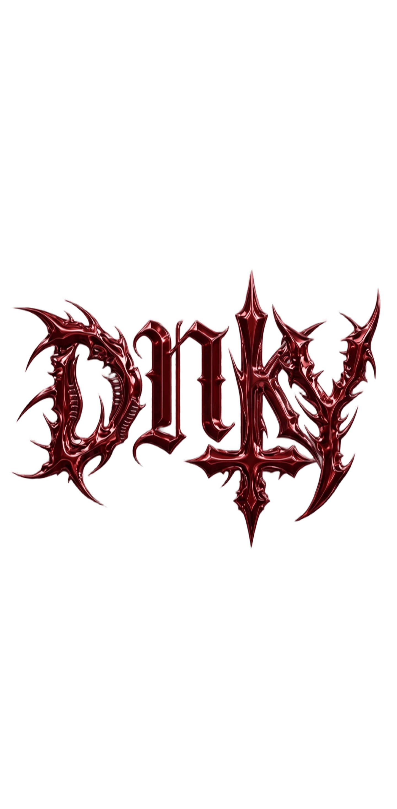

Politica de Confidențialitate
Dnk Bot — bot Discord
Ultima actualizare: 20 septembrie 2026
Această pagină explică ce date colectează botul Dnk (denumit "Botul") atunci
când e adăugat pe un server Discord, cum sunt folosite acele date, și ce drepturi ai în legătură
cu ele. Botul e un proiect personal, non-comercial, dezvoltat și întreținut de un singur
dezvoltator — nu o companie.
1. Ce date colectează Botul
- ID-uri și tag-uri de utilizator Discord — pentru a identifica cine a rulat o comandă, cine a primit un avertisment, cine deține un tichet etc.
- ID-uri și nume de server (guild) — pentru a ține configurarea separată pentru fiecare server (roluri, canale, praguri, prefix).
- Conținutul mesajelor — citit doar pentru a detecta imagini care trebuie verificate de filtrul automat NSFW; conținutul mesajelor nu este stocat, doar procesat în momentul trimiterii.
- Avertismente de moderare — motiv, moderator, dată — asociate cu ID-ul utilizatorului avertizat.
- Configurări per server — canale setate pentru tichete, log-uri, welcome, starboard, F1, notificări YouTube/TikTok/UTCN.
- Liste de urmărire — ID-uri de canale YouTube, username-uri TikTok, sau URL-uri de pagini UTCN pe care un admin a ales să le urmărească pentru notificări (acestea sunt conturi/pagini publice, nu date personale ale membrilor serverului).
2. Ce NU colectează Botul
- Parole, date de plată, sau orice informație financiară.
- Adrese IP ale utilizatorilor Discord (independent de logurile tehnice standard pe care le poate păstra automat platforma de hosting).
- Mesaje private (DM-uri) — Botul nu are acces la conversații private.
- Conținutul mesajelor obișnuite (text) — doar imaginile atașate sunt verificate, și doar dacă filtrul NSFW e activat de un admin.
3. Cui îi trimitem date
Pentru unele funcții, Botul trimite date către servicii externe, strict cât e nevoie ca funcția să funcționeze:
- RapidAPI (api4ai/nsfw3) — primește doar URL-ul unei imagini postate, pentru a verifica dacă e conținut NSFW. Nu trimitem identitatea utilizatorului.
- Steam, FiveM, Jolpica-F1 (date F1) — primesc doar termenul de căutare sau adresa de server introdusă în comandă, fără date despre utilizatorul Discord.
- YouTube (feed RSS public), TikTok, paginile de anunțuri UTCN — Botul doar citește pagini publice; nu transmite date despre utilizatori acestor servicii.
4. Unde sunt stocate datele
Toate datele persistente (configurări, avertismente, liste de urmărire) sunt stocate în fișiere
simple pe serverul unde rulează Botul (găzduit pe bot-hosting.net). Nu folosim baze de date în
cloud și nu vindem sau distribuim datele către terți în scopuri comerciale.
5. Cât timp păstrăm datele
Datele unui server rămân stocate cât timp Botul e prezent pe acel server. Dacă un admin
elimină Botul de pe server, sau dacă cere explicit ștergerea datelor, acestea sunt șterse.
6. Drepturile tale
Poți cere oricând ștergerea datelor asociate contului tău sau serverului tău, sau întrebări
despre ce date sunt stocate, contactând dezvoltatorul (vezi secțiunea de Contact mai jos).
7. Vârsta minimă
Discord impune o vârstă minimă de 13 ani pentru utilizarea platformei. Botul nu colectează
intenționat date suplimentare despre minori dincolo de ce oferă Discord API în mod standard.
8. Modificări ale acestei politici
Această politică poate fi actualizată pe măsură ce Botul primește funcții noi. Data ultimei
actualizări apare mereu în partea de sus a paginii.
Contact
Pentru orice întrebare legată de date sau confidențialitate: